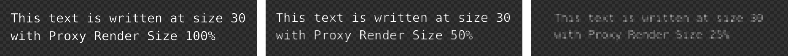

2.1.4. Proxies & cache¶
2.1.4.1. Proxies¶
プロキシは、高品質の生映像の低品質コピーです。これらは、高品質のソース ビデオの再生を容易にするための代替品として使用されます。プロキシを作成するには、解像度を下げるか、ソース ファイルを解凍します。これらは、リアルタイム編集に最適な方法でトランスコードされます。今では4K動画ファイル（3840×2160）も例外ではなくなりました。 30 fps では、これはすぐにコンピュータのパフォーマンスに負担をかける可能性があります。
注釈
4K テスト ムービー ( test files を参照) を作成し、それをシーケンサーに追加することで、自分で試すことができます。プロキシを使用しないと、ストリップのスクラブが途切れることに気づくでしょう。エフェクト（ガウスぼかしなど）を追加すると、問題がさらに悪化します。
720p (1280×720) またはより最適化された形式を使用すると、コンピューターの負荷が軽減されます。プロキシは編集を高速化するためにのみ使用されます。最終プロジェクトのレンダリングには、オリジナルの高品質のソース ファイルが使用されます。
非常に有益なビデオ チュートリアル (バージョン 2.92 用) が Blender Frenzy によって作成されています。
Blender 2.93 ではプロキシの使用が大幅に簡素化されており、平均的なユーザーはプロキシについて心配する必要はなくなりました。もちろん、内部で何が起こっているかを理解することは害にはなりません。次のデフォルト設定は、このプロキシ ファイルの自動作成を処理し、すべてがすぐに機能することを確認します。
Proxy Setup: デフォルト設定はAutomatic(図1-a)Proxy Render Size: デフォルト設定は100%(図1-b)Use Proxies: デフォルト設定はTrue(図1-b)Proxy Settings: Storage: デフォルト設定はPer Strip(図1-g)
図1: Proxy 構築プロセスの概要¶
何よりもまず、デフォルトでプロキシがバックグラウンドで自動的に構築されるようになりました。自動プロキシ セットアップを有効または無効にするには、[Edit]メニュー > [Preferences] に移動し、[System]タブを選択します (図 1-a を参照)。[Manual] または [Automatic] から選択できます。 [Automatic] が選択されている場合、ムービーまたはイメージ シーケンス ストリップをシーケンサーに追加した後、またはストリップの表示設定を変更した後、いくつかの処理が行われます (図 1-b を参照)。
パーセンテージ付きの小さな進行状況インジケータがステータス バーに表示されます (図 1-c を参照)。システムとクリップの解像度によっては、これには時間がかかる場合があります。ただし、構築プロセスはバックグラウンドで実行されるため、作業を続けることができます。
ディレクトリ BL_proxy は、ストリップのソース フォルダのサブディレクトリとして作成されます (図 1-d を参照)。このディレクトリ内に、アクティブなストリップの名前でサブディレクトリが作成されます。たとえば、testfile_4K_10s_30fps.mp4 (図 1-e)です。そして、このフォルダー内にプロキシ ファイルが作成されます。たとえば、proxy_100.avi (図 1-f) とその他の補足ファイルです。プロキシ ファイルのサイズは (25% であっても) 非常に大きくなりますが、元の H.264 (MP4) コーデックよりも最適化された圧縮形式を使用するため、高速になることに注目してください。
ストリップのスクラブがはるかにスムーズになるはずです。
課題
現時点では、プロキシはムービー ストリップに対してのみ生成でき、イメージ シーケンスに対しては生成できません。一般に、プロキシはビデオ ファイルにのみ使用され、オーディオには使用されません。
[Proxy Render Size] はデフォルトで 100% に設定されています。これは、Preview ウィンドウ > Sidebar > [View]タブ の [View Settings] (図 1-b を参照) で変更できます。 100% を選択すると、Preview ウィンドウの解像度がストリップ解像度の 100% に設定され、元のビデオ クリップ (例: testfile_4K_10s_30fps.mp4) がプロキシ (例: proxy_100.avi) に置き換えられます。後で別のプロキシ レンダー サイズを選択した場合。たとえば 25% の場合、補助プロキシ (proxy_25.avi) が作成され、2 つのプロキシ ファイル (図 1-f を参照) が存在し、そのうちの 2 番目 (25%) がプレビューに使用されます。
[Proxy Render Size] には、表示なし、シーン サイズ、25%、50%、75%、100% の 6 つがあります。これらのビュー設定は、Preview ウィンドウの解像度を設定することを目的としていることに注意してください。たとえば、ストリップの解像度が 1080p (1920 x 1080) の場合、プロキシ レンダー サイズを 25% に設定すると、Preview ウィンドウの解像度は 480 x 270 になります。この低解像度ウィンドウにストリップを表示すると、レンダリングを少し高速化します。 [No display] を設定すると、解像度がゼロに設定されます (= 表示なし!)。シーン サイズ設定は、プロジェクトと同じに解像度に設定されます (図 1-h を参照)。これはストリップの解像度とは異なる場合があります。
注釈
次の例で、[Proxy Render Size] の効果を簡単に確認できます。新しいビデオ編集プロジェクトを作成します。プロジェクトの解像度はおそらく 1080p (1920 x 1080) です。サイズ 30 のテキスト ストリップを追加します。ズームを [View] > [Fractional Zoom 1:1] に設定します。プロキシ レンダリング サイズを変更し、画質の低下を確認します。
図2: プロキシ レンダー サイズ 100%、50%、25% の品質への影響¶
ディスプレイの解像度を下げると、ディスプレイの描画に必要な時間が確実に短縮されます。一方、ソース ファイルの解像度は異なります。したがって、追加のスケーリングを行う必要があります。おそらく、100% のプロキシ サイズが存在することに混乱しているかもしれません。これは何の役に立つのですか？ディスプレイ解像度を変更しない場合、パフォーマンスはどのように向上しますか?さて、次のデフォルト設定が機能します。
この
Use proxiesチェックボックスはデフォルトで有効になっています (図 1-b を参照)。これはグローバル設定であり、プロジェクト内のすべてのストリップがプロキシを使用することを意味します。この設定はストリップごとに反転できます (後述)。したがって、ビュー設定でプロキシ レンダー サイズ 25% を選択すると、ファイル proxy_25.avi がストリップ ソースとして設定されます。
プロキシ ファイルは、2つの点でソース ファイルと異なります。
解像度: たとえば、元の解像度の 25%
エンコーディング: たとえば、フレーム内およびフレーム間圧縮の代わりにフレーム内圧縮のみを実行します。
一部の生の映像は、ストレージ要件 (スマートフォンなど) を妥当な制限内に保つために大幅に圧縮されています。一般的な H2.64 コーデックで使用される圧縮技術の 1 つはフレーム間圧縮です。平均的なビデオでは、コンテンツがフレームごとに突然変化することはありません。したがって、各フレームを完全に保存する代わりに、前のフレームからの変更のみを保存できます。したがって、ファイル内には完全なイメージ (i フレーム) を含むフレームがいくつかありますが、ほとんどのフレームはデルタ フレームです。これにより、ストレージが大幅に削減されますが、欠点もあります。一般的な編集タスクでは、フレーム間をスクラブしたりジャンプしたりします。ただし、ほとんどのフレームがデルタ フレームの場合、ソフトウェアは、対応する i フレームを検索し、その後のすべての変更を追加することによって、フレームを再生成する必要があります。それには時間がかかります。
プロキシは、フレーム間圧縮が適用されないトランスコードされたファイルです。そのため、スクラブがよりスムーズになります。各フレームには表示する必要のあるすべての情報が含まれており、他のフレームには依存しません。したがって、解像度がソース ファイルと同じ (100%) であっても、プロキシの方が元のファイルよりも高速になります。ただし、プロキシ ファイルは平均して (フレーム間圧縮された) ソース ファイルよりもはるかに大きくなります。図 1-d では、元の 4K ソース ファイルが 525 Kib、proxy_100.avi/proxy_25.avi がそれぞれ 9.2 MiB と 1.5 MiB であることがわかります。したがって、25% のプロキシでも、元のプロキシよりも約 3 倍大きくなります。
もちろん、多くはソース ファイルの形式に依存します。ソース ファイルに編集用に最適化されたコーデック (Apple の ProRes、Avid の DNxHD/HR、GoPro の Cineform など) がすでにある場合、プロキシ ファイルの作成はあまり役に立ちません。
課題
プロキシの内部動作のより良い説明。外部の Web サイト/チュートリアルへのリンクはありますか?
上記の設定は、 Sidebar > Proxy タブ > [Proxy Settings]パネルを使用して個々のストリップに対して微調整できます。パネルを表示するには、シーケンサーでストリップを選択して N を押すか、メニューの [View] > [Sidebar] を選択します。
プロキシをストリップごとに生成するか、プロジェクト全体に生成するかを決定する必要があります。 [Per Strip] を選択すると、選択したストリップの場所にプロキシ フォルダー (BL_proxy) が作成されます。このディレクトリの場所と名前は、下のパネルで [Custom Proxy Directory] チェックボックスを使用して上書きできます。または、プロジェクトを選択することもできます。プロキシ フォルダー BL_proxy が、以下のフィールドのディレクトリに作成されます。この設定は自動セットアップにも影響します。選択したディレクトリは、BL_proxy ディレクトリの自動作成に使用されます。
注釈
一般に、同じプロジェクトのすべてのプロキシに対して個別のディレクトリを作成すると、管理が容易になります。また、そのフォルダーを Blender プログラムやソース ファイルとは別のディスクに置くことをお勧めします (ディスク アクセス時間を最小限に抑えるため)。
手動プロキシ設定を選択した場合は、プロキシ ファイルを自分で構築する必要があります。プロキシを作成するストリップを選択します (複数にすることもできます)。
Set Selected Strip Proxiesボタンを使用すると、複数のプロキシ レンダリング サイズ (25%、50%、75%、100%) を有効にすることができます。 [Overwrite] チェックボックスを使用すると、既存のプロキシ ファイルを上書きする許可を与えます。このボタンを使用して、選択した複数のクリップに対してこれらの設定を有効にします。
Set Selected Strip Proxiesを押した結果、Strip Proxy & Timecodeの隣のチェックボックスが有効になり、選択したすべてのストリップにプロキシ サイズが入力されます。最終的には、ここで個々のストリップの保存ディレクトリとファイル名を変更することができます。
ただし、プロキシ ファイルはまだ作成されていません。それらを生成するには、
Rebuild Proxy and Timecode Indicesをクリックする必要があります。この時点までに、おそらく自動モードの簡単さが分かるでしょう。ビルド インジケーター (図 1-c を参照) が表示され、フォルダーとファイルがバックグラウンドで作成されます。Strip Proxy & Timecodeチェックボックスをオフにすると、スムーズなプレビューの利点が失われますが、ハード ディスク上のプロキシ ファイルは削除されません。
Build JPEG Quality 設定 0 ～ 100 は、Blender の H.264 エンコード プリセットの「Lowest Quality」から「Perceptually Lossless」に対応します。
課題
品質とタイムコードの説明が改善されました。Timecode index を参照してください。
2.1.4.2. Cache¶
このプロパティを表示するには、Developer Extras を有効にします。
再生パフォーマンスに最も大きな影響を与えるのは、ビデオ シーケンサーが再生をキャッシュできるようにすることです。これは非常に重要であるため、キャッシュ システムはユーザーの介入をあまり受けずにバックグラウンドで静かに動作するように設計されています。実際、 Sidebar > [Cache] タブ (図3) は、[Edit]メニュー > [Preferences] > [Interface] タブ で [Developer Extras] がオンになっている場合にのみ表示されます。どのような場合でも、キャッシュ システムはユーザーの利益のためにバックグラウンドでサイレントに実行されます。
パネルは 2 つあります。
Cache Settings: これらの設定はプロジェクト内の すべて のストリップに適用されます
Strip Cache: 有効にした場合、これらの設定は 選択したストリップ にのみ適用されます。したがって、グローバル設定が上書きされます。
[View]メニュー > [Show Cache] を使用すると、キャッシュを視覚化できます。これらはストリップの下に小さな色のバーとして表示されます。
図3: キャッシュ設定とキャッシュバー¶
課題
次のオプションは実際には何を意味するのでしょうか?補足情報はありますか？ (参照 Cache — Blender Manual)
Raw: ドライブから読み取られた RAW イメージをキャッシュし、メモリ使用量を犠牲にしてストリップ パラメータをより速く調整します。
Pre-processed: 前処理された画像をキャッシュし、メモリ使用量を犠牲にして効果をより速く調整します。
Composite: 中間の合成イメージをキャッシュし、メモリ使用量を犠牲にしてスタックされたストリップをより高速に調整します。
Final: 各フレームの最終画像をキャッシュします。
キャッシュには 2 つのレベルがあり、1 つ目は RAM キャッシュです。これはデフォルトで有効になっていますが、利用可能な RAM の量に基づいて増やすことができます。キャッシュの次のレベルは、キャッシュされたストリップをディスクに保存するディスク キャッシュです。ディスク キャッシュは通常、RAM キャッシュよりも多くのキャッシュをキャッシュできますが、速度が低下する可能性があります。これらのキャッシュ オプションはどちらも、[Edit]メニュー > [Preferences] > [System]タブで設定できます (図 1-a)。
課題
ディスクキャッシュとプロキシなどのキャッシュの違いの概要
プロキシはムービー ストリップでのみ機能します。キャッシュはすべてのストリップ タイプをサポートします。
プロキシは結果をハードディスクに保存します。キャッシュは結果を RAM に保存 (ディスクキャッシュを除く)
プロキシは RAW データファイルのみをキャッシュします。キャッシュは中間結果を保存できます
プロキシは永続的で、キャッシュは最終的に無効になります